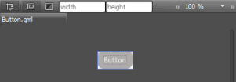

Creating Buttons
To create a button type:
- Select File > New File or Project > Qt > QML File (Qt Quick 2) > Choose to create a QML file called Button.qml (for example).
Note: Types are listed in the Library only if the filename begins with a capital letter.
- Click Design to edit the file in the Form Editor.
- In the Navigator, select Item and set the width (W) and height (H) of the button in the Properties pane.
- Drag and drop a Rectangle from the Library to the item in the navigator. This creates a nested item where the item is the parent of the rectangle. Items are positioned relative to their parents.
- In the Properties pane, modify the appearance of the rectangle:
- In the Color field, select the button color.
- In the Radius field, use the slider to set the radius of the rectangle and produce rounded corners for the button.
- Select Layout, and then select the (Fill to Parent) button to anchor the rectangle to the item.
- Drag and drop a Text type to the item in the navigator.
- In the Properties pane, edit the properties of the Text type.
- In the Text field, type Button.
You can select the text color in the Text color field and the font, size, and style in the Font section.
- In the Alignment field, select the center buttons to align the text to the center of the button.
- Select Layout > Fill to Parent to anchor the text to the whole button area.
- In the Text field, type Button.
- Press Ctrl+S to save the button.

To create a graphical button that scales beautifully without using vector graphics, use the Border Image type. For more information, see Creating Scalable Buttons and Borders.